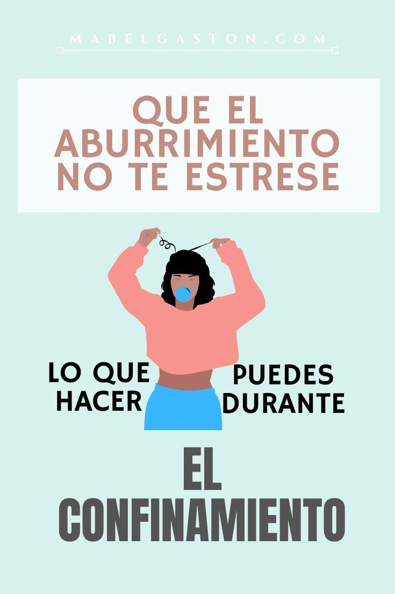

Hola, tu y yo sabemos que este periodo de contingencia ha sido un poco dificíl sobrellevar la situación. A lo mejor para algunos es fácil quedarse en casa, ya sea porque no tienen preocupaciones económicas o porque simplemente son de esas personas a las que nunca le has gustado salir. Pero para la mayoría de las personas no es tan fácil aceptar sin más el quedarse en casa porque muchas de ellas viven del día a día. |
Se ha cual sea tu situación, se que debes ya de estar aburrido de pasear de tu habitación a la sala, de la sala a la cocina, y de nuevo a tu habitación. Si, puede que estar encerrado sea bastante desesperante. |
Así que a continuación te dejaré algunos tips para pasar ese aburrimiento y llevar de buenas este periodo de contingencia. Serán consejos tanto para no aburrirte en casa como para no estresarte mucho con las tareas y trabajos que tus profesores mandan. Elige los que mejor te ayuden. |
 Pasatiempos en casa |
 |  Consejos para la escuela |